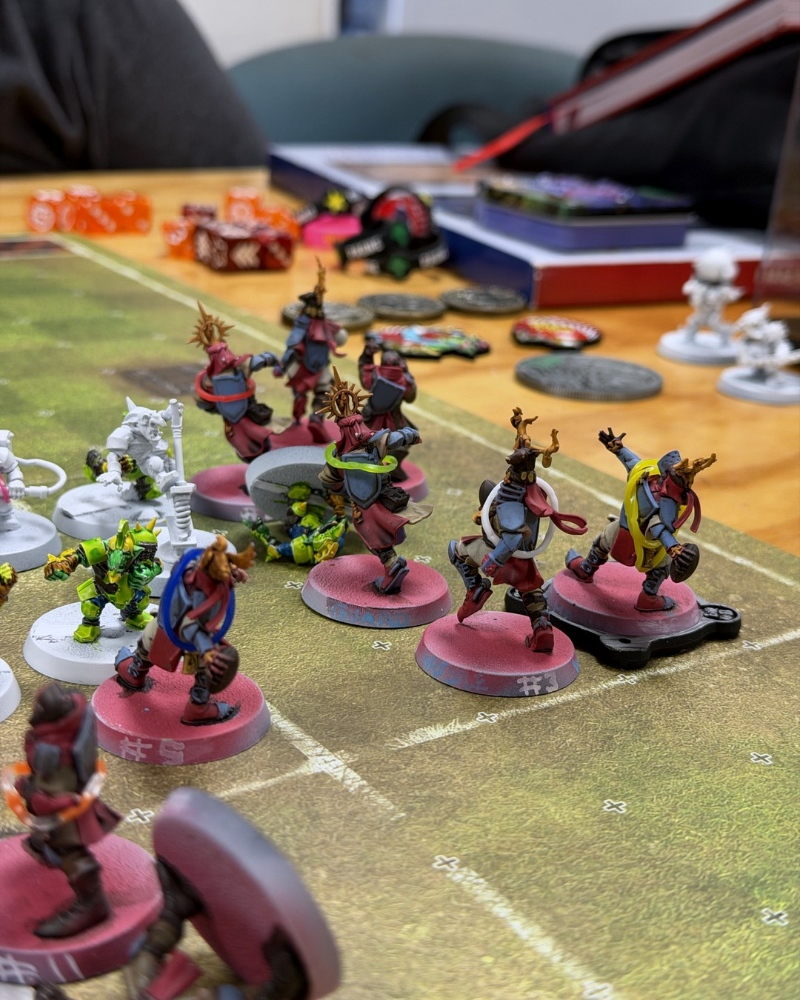

Grenadiers 2–1 Da Sundrop Mind Goblins
Three straight losses coming in. Across the pitch: a goblin team with a troll, a bomb thrower, a Doom Diver, and three envelopes of bribe money. 💣
The Holy Hand Grenadiers struck first. Rogerin found Nezot downfield and he walked it in. That's the passing play we've been drilling all season, and it finally showed up when it mattered.
Then the goblins did goblin things. The troll picked up the Doom Diver, threw him the length of the pitch, and he stuck the landing for the tying touchdown. Honestly, I kind of had to respect it. Meanwhile the bombs kept coming and my dugout kept filling up. Five casualties by the final whistle. RIP Ortrun Heinz, a humble squire who held the line.
But Rogerin to Nezot one more time, and we held on. 2–1 Grenadiers. First win in a month, and MVP to Alejandra, the Grail Knight who anchored the line all game.
A win's a win, even when half the team goes home in the casualty box.
@warhammerofficial
#bloodbowl #miniaturepainting #bretonnians #tabletopgaming #warhammercommunity